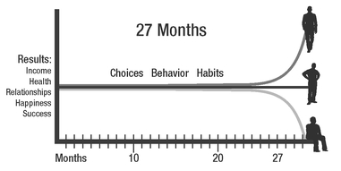
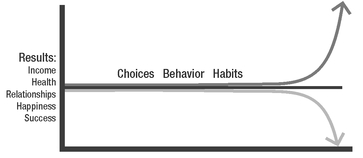
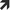

CHAPTER 1
THE COMPOUND EFFECT IN ACTION
You know that expression, “Slow and steady wins the race”? Ever heard the story of the tortoise and the hare? Ladies and gentlemen, I’m the tortoise. Give me enough time, and I will beat virtually anybody, anytime, in any competition. Why? Not because I’m the best or the smartest or the fastest. I’ll win because of the positive habits I’ve developed, and because of the consistency I use in applying those habits. I’m the world’s biggest believer in consistency. I’m living proof that it’s the ultimate key to success, yet it’s one of the biggest pitfalls for people struggling to achieve. Most people don’t know how to sustain it. I do. I have my father to thank for that. In essence, he was my first coach for igniting the power of the Compound Effect.
My parents divorced when I was eighteen months old, and my dad raised me as a single father. He wasn’t exactly the soft, nurturing type. He was a former university football coach, and he hard-wired me for achievement.
Thanks to Dad, wake-up calls were at six o’clock every morning. Not by a loving tap on the shoulder or even the sound of a radio alarm. No, I was awakened each morning by the repetitious pile-driving sound of iron pounding on the concrete floor of our garage, situated next to my bedroom. It was like waking up twelve feet from a construction zone. He’d painted a huge “No pain, no gain” sign on the wall of the garage, which he stared at while he did countless old-school strongman dead lifts, power cleans, lunges, and squats. Rain, sleet, or shine, Dad was out there in his shorts and tattered sweatshirt. He never missed a day. You could set your watch by his routine.
I had more chores than a housekeeper and gardener put together. Upon returning from school, there was always a list of instructions to greet me: pull weeds, rake leaves, sweep the garage, dust, vacuum, do the dishes—you name it. And getting behind in school wasn’t tolerated. That’s just the way it was.
Dad was the original “no excuses” guy. We weren’t ever allowed to stay home from school sick, unless we were actually puking, bleeding, or “showing bone.” The term “showing bone” came from his coaching days; his players knew they weren’t allowed to come out of the game unless they were seriously injured. One time his quarterback asked to be pulled out of the game. Dad said, “Not unless you’re showing bone.” The quarterback pulled back his shoulder pads, and sure enough, his collarbone was showing. Only then was he allowed to come off the field.
One of Dad’s core philosophies was, “It doesn’t matter how smart you are or aren’t, you need to make up in hard work what you lack in experience, skill, intelligence, or innate ability. If your competitor is smarter, more talented, or experienced, you just need to work three or four times as hard. You can still beat them!” No matter what the challenge, he taught me to make up in hard work for wherever I might be disadvantaged. Miss free throws at the game? Do one thousand free throws every day for a month. Not good at dribbling with your left hand? Tie your right hand behind your back and dribble three hours a day. Behind in your math? Hunker down, hire a tutor, and work like hell all summer until you get it. No excuses. If you aren’t good at something, work harder, work smarter. He walked his talk, too. Dad went from being a football coach to a top salesperson. From there he became the boss, and ultimately, went on to own his own company.
But I wasn’t given loads of instruction. From the beginning, Dad let us figure it out. He was all about taking personal responsibility. He didn’t hammer on us every night about homework; we just had to show up with the results. And, when you did, you were celebrated. If we got good grades, Dad took us to Prings, an ice cream parlor where you could get these king banana splits—six scoops of ice cream and all the fixings! Many times my siblings didn’t fare as well in school, so they didn’t get to go. Getting to go was a big deal, so you worked your butt off to win the trip.
Dad’s discipline served as an example for me. Dad was my idol, and I wanted him to be proud of me. I also lived in fear of disappointing him. One of his philosophies is, “Be the guy who says ‘no.’ It’s no great achievement to go along with the crowd. Be the unusual guy, the extraordinary guy.” That’s why I never did drugs—he never harped on me about it, but I didn’t want to be that guy who just went along because everyone else was doing it. And I didn’t want to let Dad down.
Thanks to Dad, by age 12, I’d mastered a schedule worthy of the most efficient CEO. Sometimes I griped and moaned (I was a kid!), but even then I secretly liked knowing that I had an edge over my classmates. Dad gave me a serious head start on the discipline and mentality it takes to be dedicated and responsible, to achieve whatever I set out to achieve. (It’s no accident that the tagline of SUCCESS magazine is “What Achievers Read.”)
Today, Dad and I joke about what an addictive overachiever he trained me to be. At eighteen, I was making a six-figure income in my own business. By age twenty, I owned my own home in an upscale neighborhood. By age twenty-four, my income grew to more than $1 million a year, and by age twenty-seven, I was officially a self-made millionaire with a business that brought in more than $50 million in revenue. That just about brings us to the present day, because I’m not yet forty, but I have enough money and assets to last my family the rest of my life.
“There are lots of ways to screw up a kid,” Dad says. “At least my way was a pretty good one! You seemed to have done pretty well.”
So, while I admit that I’ve had to practice sitting on my hands and being present in the moment, or chilling out peacefully in a beach chair from time to time (without taking a pile of business books or self-improvement CDs with me), I’m grateful for the success skills I learned from my dad, and my other mentors along the way.
The Compound Effect reveals the “secret” behind my success. I’m a true believer in the Compound Effect because Dad made sure that I lived it, each and every day, until I couldn’t live any other way if I tried.
But if you’re like most people, you’re not a true believer. There are lots of perfectly understandable reasons why. You haven’t had the same coaching and example showing you what to do. You haven’t experienced the payoff of the Compound Effect. As a society, we have been deceived. We’ve been hypnotized by commercial marketing, which convinces you of problems you don’t have and sells you on the idea of insta-fixes to “cure” them. We’ve been socialized to believe in the fairy-tale endings found in movies and novels. We’ve lost sight of the good, old-fashioned value of hard and consistent work.
Let’s examine these hurdles one by one.
You Haven’t Experienced the Payoff of the Compound Effect
The Compound Effect is the principle of reaping huge rewards from a series of small, smart choices. What’s most interesting about this process to me is that, even though the results are massive, the steps, in the moment, don’t feel significant. Whether you’re using this strategy for improving your health, relationships, finances, or anything else for that matter, the changes are so subtle, they’re almost imperceptible. These small changes offer little or no immediate result, no big win, no obvious I-told-you-so payoff. So why bother?
Most people get tripped up by the simplicity of the Compound Effect. For instance, they quit after the eighth day of running because they’re still overweight. Or, they stop practicing the piano after six months because they haven’t mastered anything other than “Chopsticks.” Or, they stop making contributions to their IRA after a few years because they could use the cash—and it doesn’t seem to be adding up to much anyway.
What they don’t realize is that these small, seemingly insignificant steps completed consistently over time will create a radical difference. Let me give you a few detailed examples.
Small, Smart Choices + Consistency + Time = RADICAL DIFFERENCE
The Magic Penny
If you were given a choice between taking $3 million in cash this very instant and a single penny that doubles in value every day for 31 days, which would you choose? If you’ve heard this before, you know the penny gambit is the choice you should make—you know it’s the course that will lead to greater wealth. Yet why is it so hard to believe choosing the penny will result in more money in the end? Because it takes so much longer to see the payoff. Let’s take a closer look.
Let’s say you take the cold, hard cash and your friend goes the penny route. On Day Five, your friend has sixteen cents. You, however, have $3 million. On Day Ten, it’s $5.12 versus your big bucks. How do you think your friend is feeling about her decision? You’re spending your millions, enjoying the heck out of it, and loving your choice.
After 20 full days, with only 11 days left, Penny Lane has only $5,243. How is she feeling about herself at this point? For all her sacrifice and positive behavior, she has barely more than $5,000. You, however, have $3 million. Then the invisible magic of the Compound Effect starts to become visible. The same small mathematical growth improvement each day makes the compounded penny worth $10,737,418.24 on Day Thirty-one, more than three times your $3 million.
In this example we see why consistency over time is so important. On Day Twenty-nine, you’ve got your $3 million; Penny Lane has around $2.7 million. It isn’t until Day Thirty of this 31-day race that she pulls ahead, with $5.3 million. And it isn’t until the very last day of this monthlong ultramarathon that your friend blows you out of the water; she ends up with $10,737,418.24 to your $3 million.
Very few things are as impressive as the “magic” of compounding pennies. Amazingly, this “force” is equally powerful in every area of your life.
Here’s another example…
Three Friends
Let’s take three buddies who all grew up together. They live in the same neighborhood, with very similar sensibilities. Each makes around $50,000 a year. They’re all married and have average health and body weight, plus a little bit of that dreaded “marriage flab.”
Friend number one, let’s call him Larry, plods along doing as he’s always done. He’s happy, or so he thinks, but complains occasionally that nothing ever changes.
Friend number two, Scott, starts making some small, seemingly inconsequential, positive changes. He begins reading 10 pages of a good book per day and listening to 30 minutes of something instructional or inspirational on his commute to work. Scott wants to see changes in his life, but doesn’t want to make a fuss over it. He recently read an interview with Dr. Mehmet Oz in SUCCESS magazine and chose one idea from the article to implement in his life: He’s going to cut 125 calories from his diet every day. No big deal. We’re talking maybe a cup of cereal less, trading that can of soda for a bottle of seltzer, switching from mayo to mustard on his sandwich. Doable. He’s also started walking a couple thousand extra steps per day (less than a mile). No grand acts of bravery or effort. Stuff anyone could do. But Scott is determined to stick with these choices, knowing that even though they’re simple, he could also easily be tempted to abandon them.
Friend number three, Brad, makes a few poor choices. He recently bought a new big-screen TV so he can watch more of his favorite programs. He’s been trying out the recipes he’s seen on the Food Channel—the cheesy casseroles and desserts are his favorites. Oh, and he installed a bar in his family room and added one alcoholic drink per week to his diet. Nothing crazy; Brad just wants to have a little more fun.
At the end of five months, no perceivable differences exist among Larry, Scott, or Brad. Scott continues to read a little bit every night and listen to audios during his commute; Brad is “enjoying” life and doing less. Larry keeps doing as he always has. Even though each man has his own pattern of behavior, five months isn’t long enough to see any real decline or improvement in their situations. In fact, if you charted the three men’s weights, you’d see a rounding error of zero. They’d look exactly equal.
At the end of ten months, we still can’t see noticeable changes in any of their lives. It’s not until we get to the end of the eighteenth month that the slightest differences are measurable in these three friends’ appearances.
But at about month twenty-five, we start seeing really measurable, visible differences. At month twenty-seven, we see an expansive difference. And, by month thirty-one, the change is startling. Brad is now fat while Scott is trim. By simply cutting 125 calories a day, in thirty-one months, Scott has lost thirty-three pounds!
31 months = 940 days
940 days x 125 calories/day = 117,500 calories
117,500 calories divided by 3500 calories per pound = 33.5 pounds!
Brad ate only 125 more calories more a day in that same time frame, and gained 33.5 pounds. Now he weighs 67 pounds more than Scott! But the differences are more significant than weight. Scott’s invested almost one thousand hours reading good books and listening to self-improvement audios; by putting his newly gained knowledge into practice, he’s earned a promotion and a raise. Best of all, his marriage is thriving. Brad? He’s unhappy at work, and his marriage is on the rocks. And Larry? Larry is pretty much exactly where he was two and half years ago, except now he’s a little more bitter about it.
The phenomenal power of the Compound Effect is that simple. The difference between people who employ the Compound Effect for their benefit compared to their peers who allow the same effect to work against them is almost inconceivable. It looks miraculous! Like magic or quantum leaps. After thirty-one months (or thirty-one years), the person who uses the positive nature of the Compound Effect appears to be an “overnight success.” In reality, his or her profound success was the result of small, smart choices, completed consistently over time.
The Ripple Effect
The results in the above example seem dramatic, I know. But it goes even deeper than that. The reality is that even one small change can have a significant impact that causes an unexpected and unintended ripple effect. Let’s put one of Brad’s bad habits under the microscope—eating rich food more frequently—to better understand how the Compound Effect can also work in a negative way and can create a ripple effect that impacts your entire life.
Brad makes some muffins from a recipe he learned from the Food Channel. He’s proud and his family loves it, and it seems to add value all around. He starts making them (and other sweets) frequently. He loves his own cooking and eats more than his share—but not so much that anyone notices. However, the extra food makes Brad sluggish at night. He wakes up a little groggy, which makes him cranky. The crankiness and sleep-deprivation begin to impact his work performance. He’s less productive, and as a result, gets discouraging feedback from his boss. By the end of the day, he feel dissatisfied with his job and his energy level is way down. The commute home seems longer and more stressful than ever. All of this makes him reach for more comfort food—stress has a way of doing that.
The overall lack of energy makes Brad less likely to take walks with his wife, like he used to. He just doesn’t feel like it. She misses their time together and takes his withdrawal personally. With fewer shared activities with his wife and an absence of fresh air and exercise, Brad’s not getting the endorphin release that had helped make him feel upbeat and enthusiastic. Because he’s not as happy, he starts finding fault with himself and others, and stops complimenting his wife. As his own body starts to feel flabby, he feels less self-confident, less attractive and becomes less romantic.
Brad doesn’t realize how his lack of energy and affection toward his wife affects her. He just knows that he feels funky. He starts losing himself in late-night TV because it’s easy and distracting. Feeling his distance, Brad’s wife starts to complain, then becomes needy. When that doesn’t work, she emotionally withdraws to protect herself. She’s lonely. She pours her energy into her work and spends more time with her girlfriends to fulfill her need for companionship. Men start flirting with her, which makes her feel desirable again. She would never cheat on Brad, but he has a feeling something’s wrong. Instead of seeing that his poor choices and behaviors are at the root of their problems, he finds fault with his wife.
Believing that the other person is wrong rather than looking inside and doing the work necessary to clean up your mess is basic Psychology 101 stuff. In Brad’s case, he doesn’t know to look inside—they don’t offer self-improvement or relationship advice on Top Chef or his favorite crime shows. However, the thought may have occurred to him that, if he had read the personal-development books his buddy Scott read, he might have learned about ways to change negative habits. Unfortunately for Brad, the small choices he made on a daily basis created a ripple that wreaked havoc on every area of his life.
Of course, all that calorie-counting and intellectual stimulation has had the opposite effect with Scott, who’s now reaping the bounty of positive results. In The Slight Edge, Jeff Olson (another Jim Rohn protege) describes this as the repeating of simple daily disciplines versus the simple errors in judgement. It’s that simple. With enough time and consistency, the outcomes become visible. Better yet, they’re totally predictable.
The Compound Effect is predictable and measurable—that’s great news! Isn’t it comforting to know you only need to take a series of tiny steps, consistently, over time, to radically improve your life? Doesn’t that sound easier than mustering up some grand show of bravery and heroic strength, only to wear yourself out and have to drum up all that energy again at a later date for another try (which will likely be unsuccessful)? I’m exhausted just thinking about it. But that’s what people do. We’ve been conditioned by society to believe in the effectiveness of a great display of massive effort. Heck, it’s downright all-American! See
Figure 1.
The beauty of the Compound Effect is in its simplicity. Notice how, on the left side of the diagram, the results are intangible, but how powerfully they differ later on. The behaviors all along the way are exactly the same, but the magic of the Compound Effect eventually kicks in to bring massive differences in results.

Success, Old School
The most challenging aspect of the Compound Effect is that we have to keep working away for a while, consistently and efficiently, before we can begin to see the payoff. Our grandparents knew this, though they didn’t spend their evenings glued to the TV watching infomercials about how to have thin thighs in thirty days or a real estate kingdom in six months. I bet your grandparents worked six days a week, from sunup to sundown, using the skills they learned in their youth and repeatedly throughout their entire life. They knew the secret was hard work, discipline, and good habits.
It’s interesting that wealth tends to skip a generation. Overwhelming abundance often leads to a lackadaisical mentality, which brings about a sedentary lifestyle. Children of the wealthy are especially susceptible. They weren’t the ones who developed the discipline and character to create the wealth in the first place, so it makes sense that they may not have the same sense of value for wealth or understand what’s necessary to keep it. We frequently see this entitlement mentality in children of royalty, movie stars, and corporate executives—and to a lesser degree, in children and adults everywhere.
As a nation, our entire populace seems to have lost appreciation for the value of a strong work ethic. We’ve had two, if not three, generations of Americans who have known great prosperity, wealth, and ease. Our expectations of what it really takes to create lasting success—things like grit, hard work, and fortitude—aren’t alluring, and thus have been mostly forgotten. We’ve lost respect for the strife and struggle of our forefathers. The massive effort they put forth instilled discipline, chiseled their character, and stoked the spirit to brave new frontiers.
The truth is, complacency has impacted all great empires, including, but not limited to, the Egyptians, Greeks, Romans, Spanish, Portuguese, French, and English. Why? Because nothing fails like success. Once-dominant empires have failed for this very reason. People get to a certain level of success and get too comfortable.
Having experienced extended periods of prosperity, health, and wealth, we become complacent. We stop doing what we did to get us there. We become like the frog in the boiling water that doesn’t jump to his freedom because the warming is so incremental and insidious that he doesn’t notice he’s getting cooked!
If we want to succeed, we need to recover our grandparents’ work ethic.
It’s time to restore our character, if not for the sake of saving America, at least for your own greater success and achievement. Don’t buy into the genie in a lamp idea. You can sit on your couch waiting to attract checks in your mailbox, rub crystals together, walk on fire, channel that 2,000-year-old guru, or chant affirmations if you want to, but much of that is hocus-pocus commercialism manipulating you by appealing to your weaknesses. Real and lasting success requires work—and lots of it!
I have a quick, real-time story to illustrate this nothing-fails-like success concept: A great new restaurant opened up close to my home on the beach in San Diego. In the beginning, the place was always immaculate, the hostess had a big, welcoming smile for everyone, the service was impeccable (the manager came over and assured it), and the food was sensational. Soon, people started lining up to eat there and would often wait more than an hour to be seated.
Then, unfortunately, the restaurant’s staff began to take its success for granted. The hostess became snooty, the service staff disheveled and curt, and the food quality hit-or-miss. The place was out of business within eighteen months. They failed because of their success. Or rather, because they stopped doing what made them successful to begin with. Their success clouded their perspective and they slacked off.
Microwave Mentality
Understanding the Compound Effect will rid you of “insta-results” expectation—the belief success should be as fast as your fast food, your one-hour glasses, your thirty-minute photo processing, your overnight mail, your microwave eggs, your instant hot water and text messaging. Enough, okay?
Promise yourself that you’re going to let go once and for all of your lottery-winner expectations because, let’s face it, you only hear stories about the one winner, not the millions of losers. That person you see jumping up and down in front of the Vegas slot machine or at the Santa Anita horse track doesn’t reveal the hundreds of times that same person lost. If we go back to our mathematical chance of a positive result, again, we have a rounding error of zero—as in, you have about zero chance of winning. Harvard psychologist Daniel Gilbert, author of Stumbling on Happiness, says that if we gave lottery losers each thirty seconds on TV to announce not, “I won!” but “I lost,” it would take almost nine years to get through the losers of a single drawing!
When you understand how the Compound Effect works, you won’t pine for quick fixes or silver bullets. Don’t try to fool yourself into believing that a mega-successful athlete didn’t live through regular bone-crushing drills and thousands of hours of practice. He got up early to practice—and kept practicing long after all others had stopped. He faced the sheer agony and frustration of the failure, loneliness, hard work, and disappointment it took to become No. 1.
By the end of this book, or even before, I want you to know in your bones that your only path to success is through a continuum of mundane, unsexy, unexciting, and sometimes difficult daily disciplines compounded over time. Know, too, that the results, the life, and the lifestyle of your dreams can be yours when you put the Compound Effect to work for you. If you use the principles outlined in
The Compound Effect, you will create your fairy-tale ending! See
Figure 2.
The Compound Effect is always working. You can choose to make it work for you, or you can ignore it and experience the negative effects of this powerful principle. It doesn’t matter where you are on this graph. Starting today, you can decide to make simple, positive changes and allow the Compound Effect to take you where you want to go.

Have I made my point? Good. Join me in the next chapter, where we will focus on the one thing that controls your life. Every victory or defeat, triumph, or failure has started with this. Everything you have or don’t have in your life right now has been because of this. Learn to change this, and you can change your life. Let’s discover what this is…
Put the Compound Effect to Work for You
Summary Action Steps
 Write out a few excuses you might be clinging to (e.g., not smart enough, no experience, wrong upbringing, don’t have the education, etc.). Decide to make up in hard work and personal development to outcompete anyone—including your old self.
Be Scott—Write out the half-dozen small, seemingly inconsequential steps you can take every day that can take your life in a completely new and positive direction.
Don’t be Brad—Write down the small, seemingly inconsequential actions you can stop doing that might be compounding your results downward.
List a few areas, skills, or outcomes where you have you been most successful in the past. Consider whether you could be taking those for granted and are not continuing to improve, and are therefore in jeopardy of having that complacency lead to future failure.